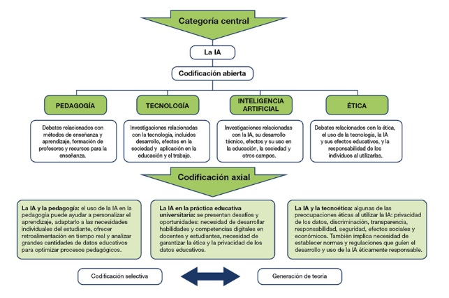

La Inteligencia Artificial (IA) se presenta como una tecnología emergente que facilita la personalización del aprendizaje y prepara a la juventud para un cambiante mercado laboral marcado por nuevos requerimientos sociales. Este trabajo describe cómo se diseñó y desarrolló una formación virtual destinada a ampliar el conocimiento sobre la IA de 76 profesores en formación inicial que cursaban la asignatura TIC Para las preguntas cerradas, de escala Likert (La escala de Likert es una herramienta de medición psicométrica ampliamente utilizada en encuestas y cuestionarios), se calcularon estadísticos descriptivos y para las preguntas abiertas, se utilizó la técnica de análisis cualitativa de codificación. Los resultados revelan que la IA tiene un impacto positivo en el aprendizaje y se ven capacitadas para diseñar sus propios recursos educativos si cuentan con el apoyo y acompañamiento del profesorado . Finalmente, consideramos que es necesario revisar los planes docentes de las asignaturas del Grado de Educación Infantil para que contemplen el uso de la IA en el diseño del proceso de enseñanza del profesorado en formación inicial.
La sociedad del conocimiento exige que se produzcan cambios en los sistemas educativos a fin de preparar a los jóvenes para los escenarios académico-laborales que se darán en el futuro a causa de la transformación digital ligada a la cuarta revolución industrial o revolución tecnológica . Esta revolución se caracteriza por interconectar, de forma inteligente, diversas tecnologías digitales como podrían ser la impresión 3D, la inteligencia artificial o el internet de las cosas para alcanzar un sistema productivo más eficiente .De este modo, surge el paradigma de la educación 4.0 que impulsa el autoaprendizaje a través de la reflexión en un contexto formativo apoyado por la tecnología y su aprovechamiento para trabajar los contenidos educativos y que estaría orientada a evitar desigualdades en el desarrollo social.
esta línea, los organismos internacionales han venido poniendo el foco en los últimos años en la relevancia de alfabetizar digitalmente a todos los agentes educativos para que puedan introducir las tecnologías en sus aulas. Así, en la Agenda 2030 para el Desarrollo Sostenibl, la ONU introduce un cuarto objetivo que alude a la equidad e inclusión. Este objetivo contempla el aprovechamiento de las tecnologías y apuesta por recursos educativos de libre acceso y la educación a distancia a fin de mejorar la calidad de la enseñanza (UNESCO, 2016). Para el logro de dicho objetivo, en el Consenso de Beijing (2019) sobre la Inteligencia Artificial (en adelante, IA) y la Educación (2015), los participantes destacan la importancia de integrar la IA en el ámbito educativo que acelere la consecución de un sistema educativo abierto y equitativo. Esto podría ser posible gracias al carácter flexible que presenta la herramienta de IA que facilita la personalización del aprendizaje a partir de la consideración de las características de los/as estudiantes .

IA debe ser entendida como una disciplina científica que configura máquinas para que sean inteligentes y capaces de resolver problemas al anticipar la acción del entorno gracias a su adaptabilidad y aprendizaje de patrones . En el contexto actual, algunas instituciones educativas han aprovechado la IA en su vertiente de chatbots o tutores virtuales para interactuar con el alumnado y optimizar su aprendizaje al poder controlar su progreso, evaluar las tareas o prestarles apoyo de manera instantánea . Otra rama de la IA utilizada en el ámbito educativo es el Machine Learning, entendido como un sistema de IA que construye modelos matemáticos, a partir de datos registrados como muestra, para hacer predicciones o tomar decisiones emulando la inteligencia humana sin necesidad de pre-programación . Sekeroglu et al.(2019) aseguran que el Machine Learning resulta eficaz cuando se usa en educación y puede ser empleado para predecir el rendimiento de los estudiantes y planificar las lecciones. Además, permite actualizar los modelos de enseñanza a la evolución del estudiante, así como actualizar los contenidos y actividades educativas . En esta línea, Rodríguez-García et al. (2021) proponen el uso de la herramienta Learning ML tras desarrollar una experiencia de aprendizaje virtual durante la pandemia con alumnado de entre 10 y 16 años. De la experiencia se desprende la constatación de un aumento de la comprensión del alumnado sobre los fundamentos del Machine Learning y que el alumnado afirmaba haber encontrado la herramienta útil, atractiva y fácil de usar. Por otro lado, Williams et al. (2019) a través de su estudio, en el que planteaban un plan específico de formación en IA con el alumnado de Educación Infantil, han puesto de relieve que es posible comenzar a introducir el uso de IA desde esta etapa inicial, pues el alumnado es capaz de comprender los conceptos de IA e interactuar con esta herramienta a pesar de su temprana edad. No obstante, León y Viña (2017) señalan que a pesar de que la IA podría cambiar tanto el modo en el que el profesor enseña como el que el alumnado aprende, deberíamos tener presente que el objetivo primordial debe ser el logro de un aprendizaje significativo. Otro de los retos que presenta la enseñanza de la IA es la enseñanza de los aspectos éticos para que sean tomados en cuenta posteriormente por el alumnado en sus diseños (Eaton et al., 2018).Así pues, las Instituciones educativas deben reflexionar sobre las practicas educativas y diseñar espacios de enseñanza flexibles que contemplen la utilización de la IA. Gisbert y Esteve (2011) señalan que sería necesario rediseñar los procesos formativos del alumnado universitario y orientarlos al desarrollo de la alfabetización digital a lo largo de todo el grado para que desarrollen las habilidades, conocimientos y actitudes necesarias para el uso de las Tecnologías de la Información y la Comunicación (TIC). No obstante, Martín y Grudziecki (2015) consideran que las habilidades, las actitudes y los conceptos quedarían relegados al primer nivel de la alfabetización digital que ellos denominan “competencia digital”. Si bien, existen otros dos niveles: “uso digital” (nivel II) y “transformación digital” (nivel III) que sería también necesario considerar. El segundo nivel se refiere al uso apropiado de la competencia digital adquirida para dar respuesta a tareas o problemas que se presentan en la vida atendiendo a sus requisitos.Este aprendizaje les servirá para acciones futuras de carácter similar y nos llevaría a considerar al individuo alfabetizado digitalmente. De acuerdo con los autores citados anteriormente, los usos digitales estarían integrados en lo que se conoce como “comunidades de práctica”, entendidas como grupos de personas unidas por un tema o práctica común y estable en el tiempo que les lleva a compartir su experiencia y profundizar en su conocimiento conjuntamente .
El último nivel, está ligado al proceso de innovación y creatividad individual o nivel de grupo derivado del uso digital que propicia un cambio en el ámbito en el que se aplica. Por ello, a través del presente artículo pretendemos acercar al profesorado en formación inicial a la comprensión y uso de la IA para contribuir al desarrollo de su alfabetización digital y facilitar su acceso de manera satisfactoria a un mercado laboral cada vez más cambiante y complejo (Figueiredo et al., 2015). Para ello, se ha diseñado e implementado una acción formativa virtual sobre IA a través de una comunidad de práctica. Durante un semestre, el alumnado, interesado en aprender sobre los aspectos didácticos de la integración de las tecnologías en el ámbito educativo como herramienta de apoyo a su futura práctica docente, trabajó en la fundamentación teórica y en el diseño de materiales digitales que serían puestos a disposición de la comunidad educativa para promover e incentivar su participación en esta comunidad a través de la red social Twitter. La literatura ofrece varias tipologías de comunidades de aprendizaje, pero atendiendo a Riel y Polin (2004) podríamos aludir a tres tipos con base en su función o finalidad: las comunidades basadas en tareas, en la práctica o en el conocimiento.De acuerdo con esta clasificación, la comunidad de prácticas aquí descrita, se enmarca en el primer tipo, pues las acciones están encaminadas a la superación de tareas que requieren de un trabajo conjunto durante un periodo determinado de tiempo y que está formada por personas que se identifican con sus iguales debido a que estudian el mismo grado, así como con el profesorado que les apoya. En este tipo de comunidad, el énfasis estaría en el aprendizaje e iría más allá de la colaboración entre sus integrantes. Si bien, comparte rasgos con el segundo tipo, pues unimos a un grupo de personas que en el futuro va a dedicarse a la misma ocupación (docente) y pretendemos facilitar la adquisición y construcción del conocimiento tecnológico y didáctico para mejorar su futura práctica docente (Bedoya et al., 2018).